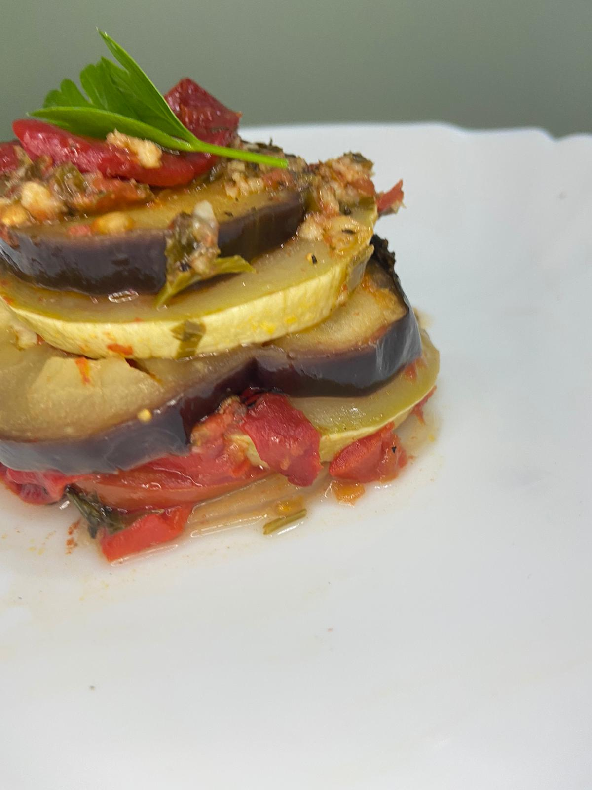

Cum mi-am descoperit noul hobby
In timpul pandemiei pe social media au fost publicate numeroase retete
Ca urmare a lockdown-urilor din 2020, social media a fost asaltată cu numeroase rețete făcute de persoanele plictisite acasă. Multe dintre ele fiind foarte dificil de ignorat, ceea ce m-a îndemnat să încerc și eu câteva dintre ele. Am început cu rețetele cele mai simple, apoi treptat am început și lucruri mai complicate, însă nu mă consider la un nivel avansat.
Am început cu rețete pe care le-am găsit pe social media, împinsă de aspectul și simplitatea lor, apoi am început să caut rețete pe care le comandam de obicei, pizza, paste.
Consider că noul meu hobby este unul la fel de plăcut pe cât de practic și divers. În fiecare zi este necesar să ne alocăm o perioadă de timp pentru hrană, iar dacă aceasta corespunde și o activitate plăcută cu atât mai bine.
Acum am câteva rețete preferate pe care le fac în majoritatea timpului, dar încerc și unele noi deoarece întotdeauna îmi ajung la urechi noi informații care îmi stârnesc curiozitatea.